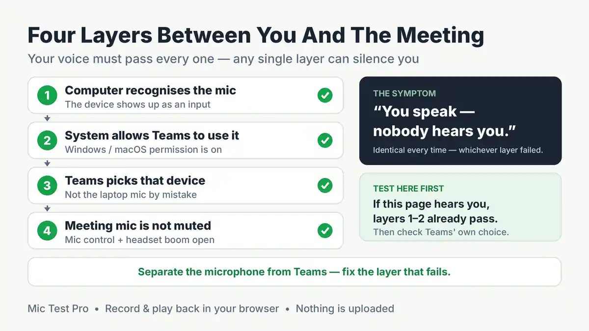
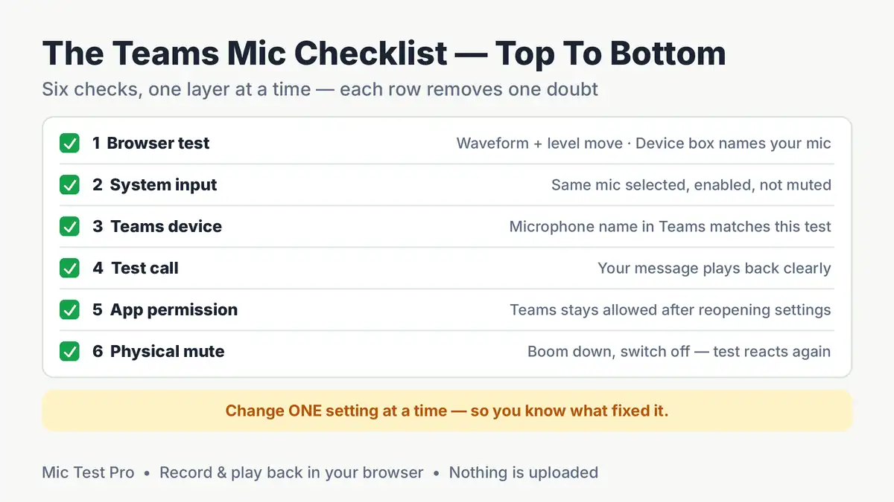
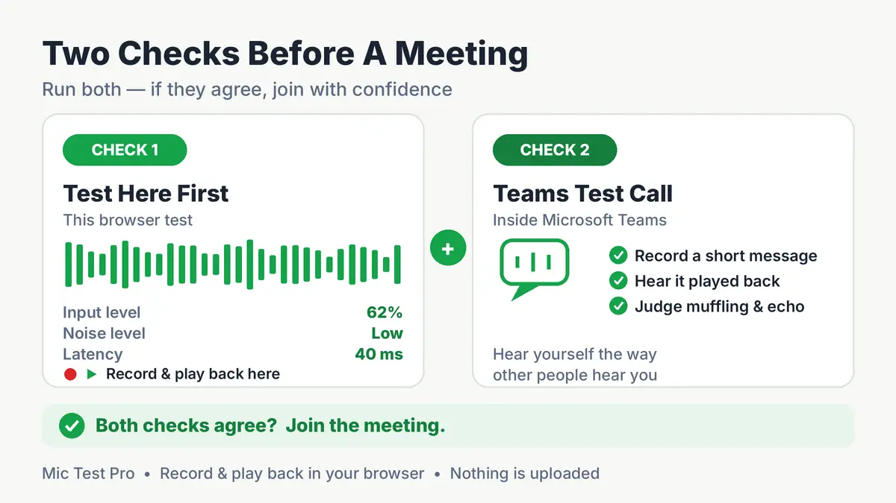
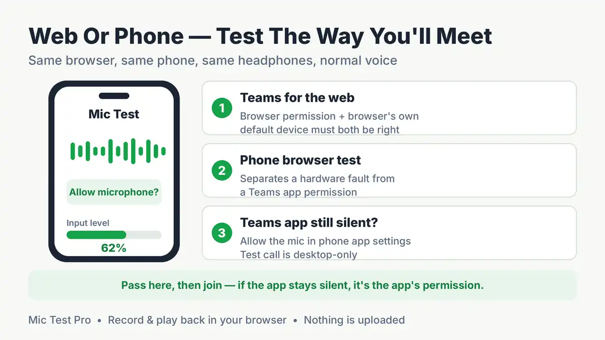

Why Test Your Mic Before A Teams Meeting?
Microsoft Teams has several places where audio can go wrong. Your computer must recognise the microphone, Windows or macOS must allow Teams to use it, Teams must choose that device rather than another one, and the meeting itself must not leave you muted. When any one layer points at the wrong device, the symptom looks the same: you speak, nobody hears you, and the first minute of the meeting disappears into settings screens.

This page separates the microphone from Teams. Click Start Mic Test, allow the browser to use the microphone, and speak normally. If the waveform moves, the input level reacts and the Device box names the microphone you expected, the hardware and the basic system path are working. That result is valuable because it tells you where not to waste time: you do not need a new headset if the only fault is that Teams has selected the laptop's built-in microphone.
If this test stays flat, Teams is unlikely to rescue the situation. A muted headset, an unplugged USB cable, a Bluetooth device connected to your phone instead, a blocked browser permission or the wrong Windows input can all stop the signal before Teams receives it. Fix that first layer here, where the readings are visible, then use Teams' own test call as the final check.
The order matters because Teams' test call is useful but sits inside the application. It can confirm the complete Teams path, including playback of your recorded message, yet it cannot tell you as clearly whether your browser can see the mic or which device name the system reports. Two short checks, in the right order, give you a much clearer answer than repeatedly joining a meeting and asking colleagues if anything has changed.
How To Test Microphone On Teams Before Joining
Click “Start Mic Test” above and allow microphone access. If you refused permission earlier, open your browser's site settings for this page, set Microphone to Allow, and reload. The Device box should change from “Not Connected” to the name of a real input device.
Speak at exactly the volume you plan to use in the meeting. Do not lean towards the microphone or raise your voice just to make the test look better. The waveform should move clearly while you speak and settle when you stop, and the input level should react without staying pinned at zero.
Stay silent for a few seconds and note the Noise Level. Then make the sounds that will exist during the real call, such as typing, a fan or an open window. If the noise reading jumps while you are silent, move the microphone closer, move yourself away from the noise, or plan to use Teams noise suppression.
Check the device name carefully. Many laptops show similar names for the built-in mic, a webcam mic and a headset. If the name is not the device in front of you, change the computer's input first: on Windows, Settings > System > Sound > Input; on a Mac, System Settings > Sound > Input. Then test again.
When this test passes, open Teams and choose the same microphone there: Settings and more > Settings > Devices, then select it under Microphone. Finish with Make a test call on that screen. The Test Call Bot records a short message and plays it back, so you hear your voice through the same route your meeting will use.
The latency reading is shown in milliseconds (ms): the delay between speaking and your browser receiving the sound. Lower is better — a high reading, often from a Bluetooth headset, means your voice will lag in the meeting too.
Microsoft Teams Microphone Settings Checklist
Use this checklist from the top down. Each row removes one layer of doubt, and the final column tells you what a passing result looks like. Work through it to test microphone in Teams step by step, one layer at a time. Do not change five settings at once: if the microphone suddenly works, you will not know which change fixed it, and the problem may return the next time you connect a different headset.

| Check And Action | Where | Pass Result |
|---|---|---|
| 1. Browser test — start the test, allow access and speak at meeting volume. | This page | The waveform and input level move, and the Device box names the expected microphone. |
| 2. System input — select the same microphone and make sure it is enabled and not muted. | Windows: Settings > System > Sound > Input. Mac: System Settings > Sound > Input. | Your computer recognises the device and shows it as the active input. |
| 3. Teams device — choose your speaker and microphone from the Audio settings lists. | Settings and more > Settings > Devices | The Microphone name in Teams matches the device that passed this test. |
| 4. Test call — select Make a test call, follow the Test Call Bot and record a short message. | The same Teams Devices screen | Your message plays back clearly and the summary does not point to a device problem. |
| 5. App permission — allow microphone access and allow Teams or desktop apps to use it. | Windows: Privacy & security > Microphone. Mac: Privacy & Security > Microphone. | Teams remains switched on after you close and reopen the settings screen. |
| 6. Physical mute — move the boom down if your headset mutes when raised, and switch off any physical mute control. | Headset boom, cable switch or microphone body | This test reacts again without any software setting being changed. |
| 7. Noise control — try Background noise only, or Voice isolation where it is available and suitable. | Teams Settings > Devices > Noise suppression | Your speech stays clear while ordinary room noise becomes less distracting. |
The test call deserves one extra note. Microsoft says it is available in the Teams desktop app for Windows and Mac, is currently offered in English only, and is not available in Teams for the web. Microsoft also says the short test recording is deleted immediately after the call. If you use Teams in a browser, this page and the browser permission settings become your main pre-meeting check.
Common Microsoft Teams Microphone Problems
Teams Chose Another Microphone
A computer can offer Teams several microphones at once: the laptop's built-in array, a webcam, a monitor, a USB device and a Bluetooth headset. Teams remembers a device choice, so it may keep using yesterday's microphone after today's headset is connected. Compare the name in Settings > Devices with the Device box on this page. If the names differ, one of the two applications is listening to a different place.
You Are Muted In More Than One Place
Teams has a meeting Mic control, some meetings begin with participants muted, and many headsets add a physical mute on the boom, cable or ear cup. Any one of these can silence you while the microphone itself is healthy. Microsoft's own advice is simple: check the meeting control is not muted, then check that a raised boom or physical button has not muted the device itself.
Windows Or macOS Permission Is Off
The operating system can block Teams even when the microphone works elsewhere. On Windows, open Privacy & security > Microphone and turn on microphone access, app access, the Microsoft Teams (work or school) option and desktop-app access where those switches appear. On a Mac, open Privacy & Security > Microphone and make sure Teams is allowed. Restart the device after changing a permission that was off.
Bluetooth Connected, But Not To This Computer
Bluetooth headphones often reconnect to the last device they used, which may be your phone rather than your laptop. They can also provide speakers while their microphone remains unavailable. If the headset is missing from the Teams Microphone list, check it is charged, disconnect it from the other device, and reconnect it to the computer. A USB receiver supplied with a headset can be more reliable for regular work calls than ordinary Bluetooth pairing.
Automatic Sensitivity Changes Your Level
Teams offers an “Automatically adjust mic sensitivity” control in its device settings. It is meant to keep your level even, but a room with changing noise or a microphone at an inconsistent distance can still make your voice feel unsettled to other people. Use this page to separate the causes: keep your distance and speaking volume steady, watch the input level, and only then judge whether the Teams setting is helping or fighting the room.
Another App Or Organisation Policy Is In The Way
Another calling or recording application can already be using the device, and a work or school account may have some meeting options controlled by an IT administrator. Close other call applications and test again. If a setting described here is missing or cannot be changed in a managed account, that may be policy rather than a fault; your test result here still helps you explain the problem clearly to your IT support team.
Teams Mic Problems: Problem, Cause, Fix
| Problem | Most Likely Cause | Fix | Check on this page |
|---|---|---|---|
| Nobody can hear you at all | You are muted, Teams selected the wrong input, or the operating system blocked the microphone | Check the meeting Mic control and any physical mute first. Then match the device in Settings > Devices to the one named on this page, and check the system privacy permission. | Input Level stays flat when you speak |
| This test works, but Teams does not hear you | The microphone is healthy; the fault is in the Teams device choice or permission layer | Open Settings and more > Settings > Devices and select the tested microphone. During a meeting, use the arrow beside Mic > More audio settings to change it without leaving. | This page hears you — the fault is in Teams |
| Your microphone is missing from Teams | The computer has not recognised it, it is disconnected, or a Bluetooth device is connected elsewhere | Check the device in your system Sound input settings. Unplug and reconnect a wired device. Charge and disconnect a Bluetooth device from other equipment, then pair or reconnect it. | Device name missing from the input list |
| People say you are very quiet | The microphone is too far away, its input volume is low, or Teams is using a distant built-in mic | Move the microphone or boom closer. Check the Windows input volume under System > Sound > Input or the Mac Sound input level. Confirm the named Teams device before joining again. | Input Level barely moves at normal distance |
| Your voice sounds distant or full of room echo | Teams is recording through a laptop or webcam microphone across the room | Select the headset or external microphone in Teams Devices. The Device box on this page should show the same name before you rely on the result. | Tap test: the laptop mic answers, not the headset |
| Fans and typing are louder than expected | The microphone is close to the noise source, or noise suppression is not set for the room | Use the Noise Level reading while silent to measure the room. Move the mic closer to you and farther from the noise, then try Background noise only or Voice isolation in Teams Settings > Devices. | Noise Level jumps while you type |
| It worked yesterday and stopped today | A new default device appeared, an update changed a permission, or a wireless headset reconnected as speakers only | Run this test first. If it fails, correct the system input and connection. If it passes, reselect the device in Teams and restart Teams if the device list looks stale. | Input Level flat — re-check the Device name |
| The microphone works on the desktop app but not in a browser | The browser does not have microphone permission for Teams, or it selected a different default device | In Chrome, use Settings > Privacy and security > Site settings > Microphone, select the correct device and allow sites to ask. In Edge, check Settings > Cookies and site permissions > Microphone. Then reload Teams. | Device name differs between browser and app |
How The Teams Test Call Works — And What It Cannot Tell You
Microsoft's built-in test call is the best final check inside Teams — a real teams test microphone check, because the bot records your voice and plays it back. Open Settings and more, choose Settings, then Devices. Under Audio settings, confirm your speaker and microphone, then select Make a test call. You hear ringing first, then a voice asks you to record a short message. It plays the message back, gives you a summary, and leaves you in the right place to change device settings if the result is poor.

Playback used to be the test call's advantage over this page. Our browser tool shows whether sound is reaching the microphone and how the level, noise and latency behave, and the Record Voice button now lets you record a short clip and play it back here too. The Teams test call still goes one step further: it sends your voice through the actual Teams route, so you judge muffling, distortion and room echo the way another participant would hear them. If the waveform and playback here sound healthy but the Teams playback is unclear, pay attention to microphone position, distance and background noise. Clips here run up to 60 seconds, can be downloaded as WAV files, and never leave your browser.
The test call also has limits. It is tied to the device Teams selected at that moment, so it cannot tell you whether another connected microphone would perform better. It is currently limited to the Teams desktop app for Windows and Mac, is offered in English only, and is unavailable in Teams for the web. On a phone, or in a browser, use this page as the device check and then verify the browser or app permission separately.
A sensible routine takes less than a minute. First, pass this browser test with the correct device name. Secondly, open Teams Devices and select exactly that device. Thirdly, make a test call and listen to the playback. If all three agree, join the meeting. If they disagree, the disagreement tells you which layer to fix instead of sending you through a random list of settings.
This page can check the listening side before you open Teams, too. Press Test Speakers and the tool plays a short test sound through your chosen output, so you know your speakers or headphones work before the test call. Hear Yourself plays your own voice back live while you speak — use headphones, or your mic will pick up your speakers and the meeting will hear an echo.
Testing Your Mic In Teams For The Web And On Mobile
Teams for the web adds your browser as another decision-maker. The browser needs its own microphone permission, it may have a default device of its own, and the operating system permission must also be on. That is how to test mic in Teams for the web: same browser, same device, before you join. When you open this page in the same browser you use for Teams, the result is especially useful: if this test cannot obtain a signal, check the browser's microphone permission and default input before searching inside the Teams web app.

In Google Chrome, Microsoft directs users to Settings > Privacy and security > Site settings > Microphone. Choose the correct device and set the default behaviour so sites can ask to use your microphone. In Microsoft Edge, the equivalent area is Settings > Cookies and site permissions > Microphone. After changing either setting, reload the page and run the test again; an old tab may continue using the earlier refusal.
On a phone, this page can test mic in Teams through the mobile browser, provided you allow access. That is useful because it separates a hardware or headset problem from a Teams app permission. If the browser test passes but the Teams app is silent, open the phone's privacy or app-permission settings and allow Microsoft Teams to use the microphone. Close other apps that may be using the microphone, then reopen Teams. Microsoft's Make a test call is not the mobile route; it belongs to the desktop application.
For an important meeting on a phone, keep the test simple and realistic. Use the same headphones, hold or place the phone where it will stay during the call, and speak at your normal volume. A microphone that works only when the phone is lifted close to your mouth may not be the right choice for a hands-free meeting.
Microsoft Teams Mic Test FAQs
Why can't Microsoft Teams find my microphone?
Usually the microphone is not selected in Teams, Windows or macOS does not recognise it yet, or Teams does not have permission to use it. First check that the device appears in your system sound input settings. Then open Teams, go to Settings and more > Settings > Devices, and choose it from the Microphone list. If this browser test cannot hear it either, fix the device, cable, Bluetooth connection or system permission before changing more Teams settings.
How do I make a test call in Microsoft Teams?
In the Teams desktop app, select Settings and more > Settings > Devices, then choose Make a test call under Audio settings. Follow the Test Call Bot, record a short message and listen to the playback. Microsoft says the feature works in the desktop app for Windows and Mac, is currently available in English only, and is not available in Teams for the web. Microsoft also says the test recording is deleted immediately after the call.
Do I need a Microsoft Teams account to use this mic test?
No. This test runs independently in your browser. It does not need Teams, a Microsoft account, a work or school sign-in, or any installation. It checks the microphone itself before Teams becomes part of the picture.
Why can nobody hear me in Teams when this test works?
If this page hears you clearly, your microphone is probably working and Teams is the layer to check. The usual causes are a different microphone selected in Teams, the meeting Mic control being muted, a physical mute switch or headset boom being in the mute position, or your organisation's settings limiting an option. Open Settings and more > Settings > Devices and make sure the Microphone name matches the device that passed this test.
How do I change my microphone in Teams during a meeting?
Select the small arrow next to the Mic control in the meeting window, choose More audio settings, and select the correct microphone. If your microphone is missing from the list, unplug it and plug it back in. For a Bluetooth microphone, make sure it is charged and not still connected to another device, then reconnect it.
Why is my microphone too quiet in Teams?
Start with distance: moving a headset boom or microphone closer normally helps more than changing several settings at once. Then confirm Teams is using the microphone you are actually speaking into, because a distant laptop mic is a common cause of quiet audio. On Windows, open Settings > System > Sound > Input, select your microphone and check that its volume is not muted or set very low. Run this test again and speak at your normal meeting volume.
Why does Teams use my laptop microphone instead of my headset?
Teams selects speakers and microphones separately, and the choice can remain on the built-in laptop device after you connect a headset. Go to Settings and more > Settings > Devices and select the headset under Microphone. If you connected the headset after Teams was already open and it does not appear, reconnect it or restart Teams. Also check that the headset itself, not only its speakers, has connected.
How do I reduce background noise in a Teams meeting?
Use the Noise Level reading on this page while you stay silent: if it jumps for a fan, keyboard or traffic, other people may hear those sounds too. Move away from the noise where you can and keep the mic close to your mouth. In Teams, open Settings > Devices and look under Noise suppression. Microsoft offers Background noise only and Voice isolation; Voice isolation may require a voice profile if you are not using a headset. Test again after changing one setting at a time.
Can I test my microphone for Teams on my phone?
Yes, you can open this page in your phone browser, allow microphone access and speak to check the waveform, input level and device response. Microsoft's Make a test call feature is for the Teams desktop app, not the mobile app. If the Teams app cannot hear you, check the phone's app permissions and make sure Microsoft Teams is allowed to use the microphone.
Does this mic test record or upload my voice?
Only if you press Record Voice. This tool analyses the microphone in your browser so you can see the waveform and readings. If you choose to record, the recording is created and kept only in your own browser so you can play it back or download it — your audio is never uploaded or stored on any server.
Can I test my mic and speakers together in Teams?
Yes, with Teams' own test call: in the desktop app, go to Settings and more > Settings > Devices and select Make a test call. The bot records a short message and plays it back, which tests your microphone and your speakers in one go. For your camera, Teams shows a preview on the screen before you join a meeting — check yourself there. This browser page tests your microphone and, with the Test Speakers button, your speakers or headphones too. It does not test cameras.